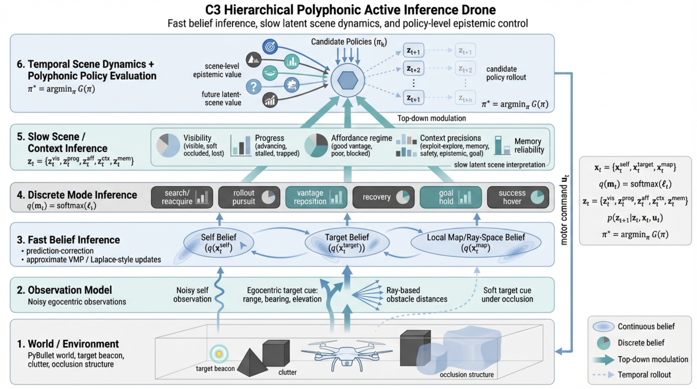

This project implements a drone agent that must reach a target beacon in a cluttered three-dimensional world under partial observability. The controller is not given simulator truth. Instead, hidden-state estimates are updated online from noisy self-observations, egocentric target cues, and ray-based obstacle sensing, and action is selected from those beliefs by a polyphonic control architecture whose pressures are modulated by a slower latent scene layer.
The system combines continuous belief updates, posterior-like behavioural mode arbitration, scene-level epistemic control, and temporal latent scene dynamics. In practice this allows the drone to remember the target under occlusion, distinguish poor vantage from genuine blockage, switch between exploration and exploitation, and choose actions partly for how they are expected to improve the future scene rather than only the immediate target distance.
Many active inference demonstrations remain either highly discrete or unrealistically privileged. This system was designed to move beyond that. The drone inhabits a continuous 3D environment, receives only local noisy cues, and must reach a target while maintaining a coherent belief state through periods of occlusion, clutter, and changing line-of-sight geometry. The policy does not reduce to direct pursuit of a known coordinate.
The more distinctive feature is the organisation of uncertainty. The agent maintains a fast belief layer over self state, target state, and local obstacle structure; a discrete layer over behavioural modes; and a slower latent scene/context layer that summarises whether the world currently looks visible, soft-occluded, lost, advancing, stalled, trapped, open, or blocked. Candidate policies are then evaluated not only for target progress and safety, but also for how much they are expected to clarify and improve these higher-order latent scene variables over time.

The simplified graph highlights the main dependency structure: observations feed fast beliefs; fast beliefs support mode inference; slower latent scene variables modulate what the controller trusts; and candidate policies are evaluated partly for how they are expected to improve future scene state.
The simulator retains ground truth internally, but the controller sees only noisy observations generated from that truth.
The first inferential layer converts observations into posterior summaries over hidden state.
A slower latent layer interprets the current situation and predicts how that situation may evolve under different actions.
Action is not issued by a single monolithic controller. The system maintains posterior-like scores over a compact family of behavioural regimes, and the current regime is selected from those beliefs under the influence of target confidence, visibility, progress, local geometry, and scene/context interpretation.
These regimes are not intended as opaque labels. They are interpretable behavioural states that can be inspected, plotted, and related directly to changing beliefs over visibility, blockage, progress and target confidence.
Polyphony here means that candidate actions are evaluated under several concurrent behavioural pressures rather than one fixed objective. These pressures have their own effective precisions, and those precisions are shaped by the slower scene/context layer.
The controller therefore does not merely chase the target. It can choose to move in ways that are temporarily suboptimal for distance reduction but useful for information gathering, line-of-sight recovery, or improvement of the future scene.
The fast latent state is factorised as
In the current implementation these are approximated by
where $d_k$ denotes the inferred obstacle distance along ray direction $k$.
The observation vector is
It is generated from truth but consumed by the controller as noisy evidence:
Here $h(\cdot)$ returns egocentric range, bearing and elevation, with weaker soft observations when the target is broadly localised but occluded.
The fast inferential layer maintains approximate Gaussian beliefs over self and target state,
Beliefs are predicted forward under a local transition model and then corrected by precision-weighted prediction errors. A stylised form is
For the target state, egocentric cues are reconstructed into world coordinates using the current self belief. Under prolonged soft occlusion, target confidence decays and covariance inflates, which prevents the agent from becoming spuriously certain about an unseen target.
Behavioural arbitration is represented by a posterior-like belief over controller modes,
where the logits $\ell_t$ depend on target confidence, visibility, local obstacle structure, progress, deadlock signals and proximity to target.
The slower latent scene state is factorised as
These variables summarise visibility regime, progress regime, affordance regime, context precisions and target-memory reliability. They are updated from smoothed evidence and then used to bias control at the faster layer.
The current controller also carries an explicit temporal model of how the slower scene variables evolve. In schematic form,
This means the agent does not only infer what kind of situation it is currently in. It also predicts how visibility, progress, affordance and memory reliability are likely to change under different candidate actions.
For each candidate short-horizon control sequence $\pi_k$, the controller rolls the dynamics forward from the current belief state and computes a composite score:
Representative terms are
The distinctive feature of the current controller is that epistemic value is not limited to target localisation. The controller also estimates whether an imagined action sequence is likely to clarify the latent scene state and improve the future scene trajectory.
Intuitively, policies are favoured when they are expected to improve visibility, disambiguate blocked corridors from poor vantage points, preserve useful target memory, and move the agent into a better latent scene over future steps.
The system can be read in standard active inference terms. The fast layer approximately minimises a variational free energy over hidden state,
while action is selected by approximately minimising a structured expected-free-energy surrogate,
The implementation is intentionally lightweight rather than a full symbolic factor-graph engine, but it preserves the core active inference logic: actions are chosen for pragmatic value, safety, uncertainty reduction and future evidence, all conditioned on an evolving belief state rather than direct access to truth.
The key engineering decision is that the controller never consumes simulator truth directly. Truth exists only to generate observations. This separation forces the policy to operate on beliefs, and it is the reason the system behaves like an inferential controller.
The drone successfully reaches the target while transitioning through a mixture of exploratory search, short-horizon rollout, local repositioning and target-hold behaviour. Logged summaries show:
This project shows that a relatively compact controller can integrate continuous latent-state estimation, discrete behavioural inference, slower contextual scene interpretation, and temporal scene-aware policy evaluation in a single embodied agent.